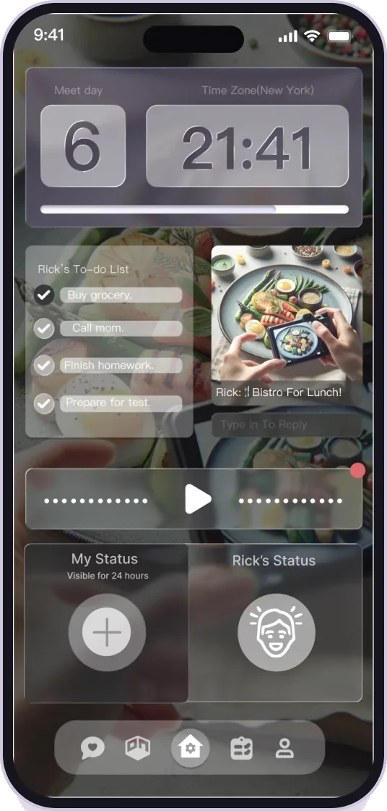
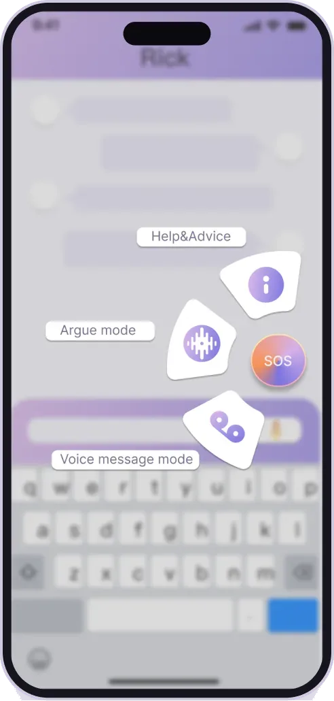
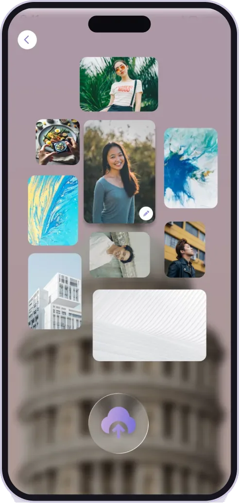
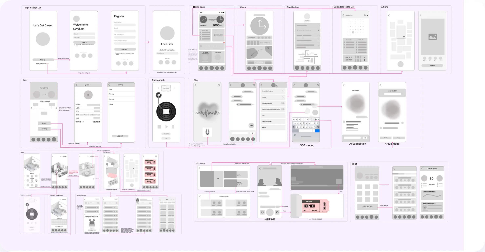
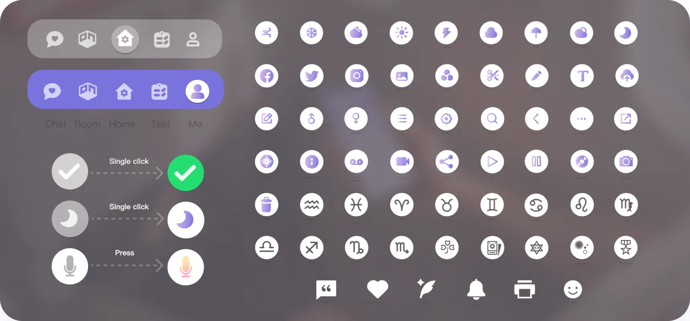

An iOS app for long-distance couples: AI friends when your partner can’t answer, a room you build together, and a countdown to the next visit.
Two time zones, one relationship.
Long-distance relationships are common between 18 and 35: school, a new job, a long business trip, a family to care for, or someone you met online.
Every couple I asked already had chat, calls and photos. Still, 75% said a struggling relationship disrupted their normal life, and most said 3 months was the longest they could go without meeting.
The hard moment isn’t a missing feature. It’s 3 a.m. in one city, and the person you want to talk to is asleep in the other.
So I designed for the gaps between messages, not the messages themselves.
Same idea, redrawn.
The 2024 version was flat lilac cards. In 2026 it became frosted glass over your photos: the reunion countdown and their local time share one card, and Argue mode moved to a dark glass screen.
Link your partner
How might we help long-distance couples feel supported when the other can’t answer, and keep building memories while they’re apart?
“I need this app right now.”
A friend in a long-distance relationship
A one-week survey of 121 people aged 20 to 30, and three in-depth interviews.
What do you think is the biggest difficulty in a long-distance relationship?
121 peopleHover a card to hear it in people’s own words.
Broken communication
Time zones and busy schedules interrupt contact.
Lack of company
No instant response when you miss each other.
No shared memories
Nothing to do together.
Trust & security
Anxiety that the other person will drift away.
Sources: my survey (n = 121) and 3 interviews. Quotes shortened.
Six struggles. Four I could design for.
Five tabs, mapped before any pixels.
Chat, Room, Home, Test and Me. Home sits in the middle: open the app and you see your partner’s status, the time where they are, and the days until you meet. Click to zoom.

Talk to the AI before you fight.
Two AI friends, ELVO and VELO, catch your feelings when your partner can’t. In Argue mode they take both sides. Hover a pin.
Build the home you imagine, together.
A shared bedroom you decorate as a pair. To-dos earn credits, credits open furniture mystery boxes, and the fridge shows what’s for dinner on both sides.


See each other at a glance.
Home answers the three questions people asked most: where are they, are they okay, and when do we meet?
Two moments, moving.
Type your own fight on the right and watch ELVO and VELO argue it out.
The whole app, tappable.
Start at sign-up, link with your partner, then open Chat and tap Argue mode. The pink dot shows where to tap next.
Romantic purple, warm pink.
Add “Link” and you get LoveLink. Type is PingFang HK (Semibold, Medium, Regular).
Primary, romantic purple
Secondary, lilac
Accent, sakura pink
Highlight, warm yellow
Background, mist purple

An AI in the middle helps. It can’t replace the partner.
- Someone to talk to at 3 a.m.
- A pause before a fight.
- A reason to open the app together.
- Couples leaning on the AI instead of each other.
- Chat history is intimate data: keep it private by default.
- Games and credits can turn into chores.
Design for the gaps between messages.
Put the tappable prototype in front of couples who live apart, and see which feature they open first.
Measure how often they open it when the partner is offline, whether Argue mode calms or escalates, and how safe they feel sharing chat history.VIVA TOY→